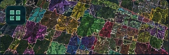
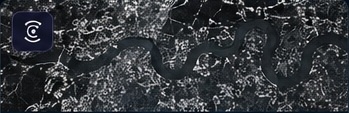
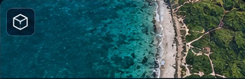
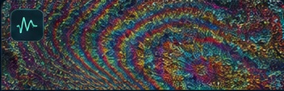

Terrain Modeling with ML
High-resolution DEM terrain and hydrological feature modeling for automated erosion-channel extraction.
Machine LearningDEM
AUC 0.9650
→Public-safe summaries of geospatial AI and remote-sensing work. Client names, exact locations, coordinates and confidential deliverables are intentionally omitted.

High-resolution DEM terrain and hydrological feature modeling for automated erosion-channel extraction.

Deep-learning semantic segmentation using multispectral imagery for complex vegetation classes.

Adaptive spectral and object-based analysis for robust high-resolution water extraction.

Object detection, geolocation and satellite time-series monitoring for tree-level health assessment.

Spectral indices, elevation and canopy-height information combined in an OBIA workflow.

L-band SAR calibration, speckle filtering and decomposition for wetland class extraction.

Remote-sensing classification and ecological interpretation for coastal land-cover assessment.

Pervious/impervious mapping designed to support drainage and spatial modeling workflows.